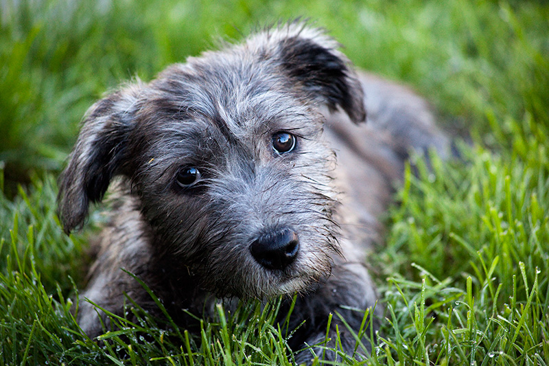
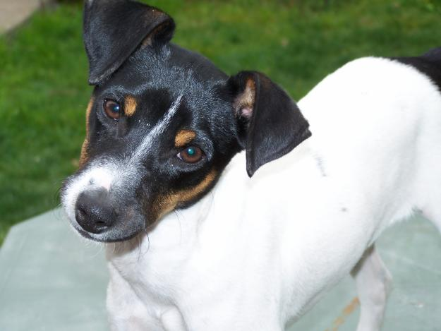
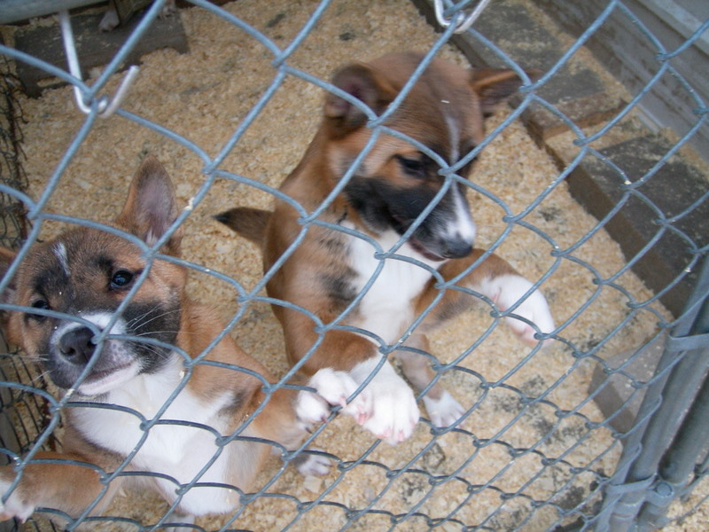
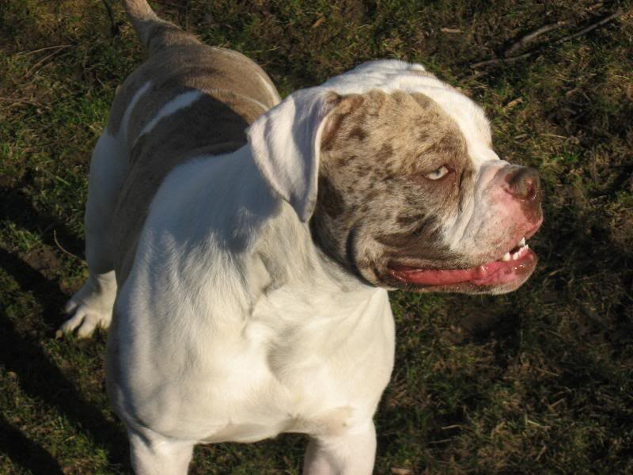
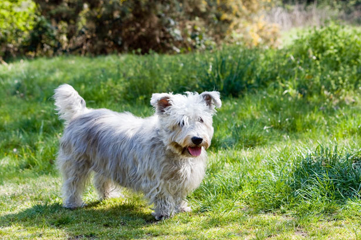
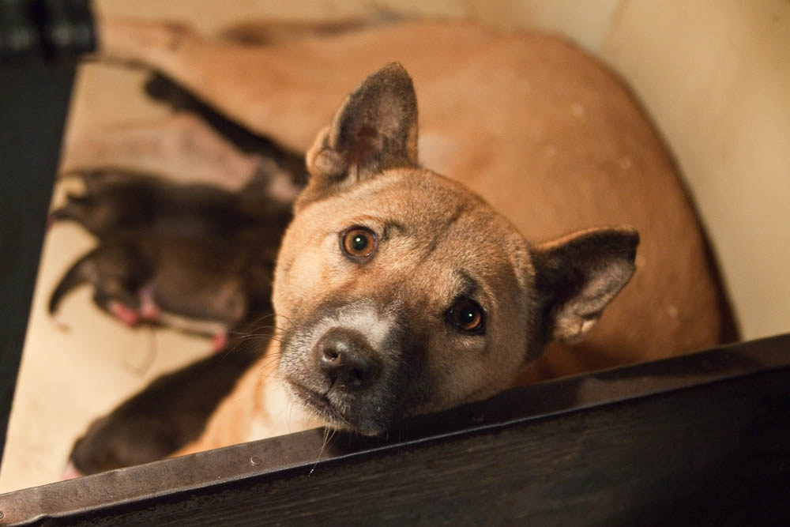

Bella

- Breed: Glen of Imaal Terrier
- Age: 3 years
- Size: Small
- Great for kids and energetic households
Charlie

- Breed: Chilean Fox Terrier
- Age: 4 years
- Size: Small
- Great for older couples and quiet households
Luna and Max

- Breed: New Guinea
- Age: 1 year
- Size: Small
- Great for energetic couples, must adopt together!
Rocky

- Breed: Alapaha Blue Blood
- Age: 8 years
- Size: Medium
- Great for experienced dog owners
Daisy

- Breed: Maltese Mix
- Age: 2 years
- Size: Small
- Great for active households and families with older kids
Becky

- Breed: New Guinea
- Age: 10 years
- Size: Large
- Great for outdoorsy individuals